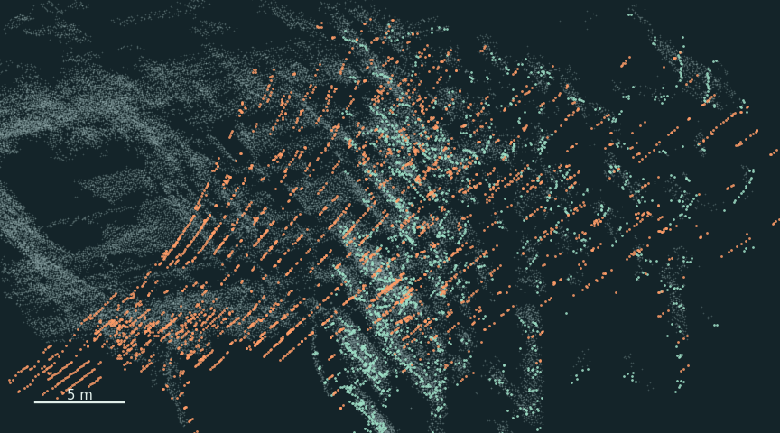
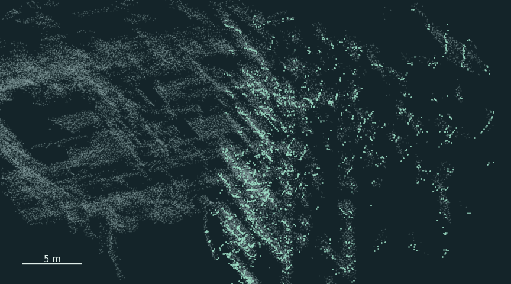

01점 위치
찍은 시각의 각도를 쓰자 튄 점이 돌아왔다
점이 튄 순간 라이다 시각은 평소 간격으로 이어졌고, 함께 붙은 엔코더 시각만 크게 뛰었다. 그래서 거리 측정값은 그대로 두고, 평소 두 시각의 차이와 회전 속도로 라이다가 찍은 순간의 회전각을 추정해 다시 그렸다.
Ouster가 잰 같은 점을 두 각도로 그렸다9월 3일 센서 2 · 실측
Ouster OS1-32와 회전 받침엔코더는 라이다 전체를 돌리는 받침의 각도를 잰다.
회색 · 여러 번 관측한 평소 위치
주황 · 기록에 붙은 각도로 그린 점
청록 · 측정 순간의 각도를 추정해 그린 점
02시간 필터
시각이 어긋난 기록은 점 계산에서 뺐다
01에서 각도를 다시 계산한 건 원인을 좁히는 실험이었다. 여기서 시험한 필터는 라이다 패킷과 엔코더 기록을 한 짝으로 보고, 그 짝을 점 계산에 쓸지 정한다. 패킷 하나에는 여러 점의 측정값이 들어 있다.
같은 장면에서 시각 차이를 바꿔 본다
01에서 본 패킷으로 모의 비교회전 받침 속도 35.37 RPM 고정
라이다 시각과의 평소 간격을 기준으로 삼는다. 엔코더 쪽이 그 기준보다 앞서면 +, 뒤처지면 −다.
회색 · 01과 같은 배경
빈 원 · 시각 차이가 0일 때의 예시 점
주황 · 시각 차이로 밀린 점
회전각 오차 5.39°
예시 점 이동 2.45 m
이 패킷에서 점 161개 표시
받은 한 짝라이다 패킷 + 엔코더 각도 기록
원본 로그받은 짝을 그대로 저장
5 ms 필터문제 직전의 짝부터 두 시계가 각각 얼마나 진행했는지 비교
통과한 짝점 위치 계산
경과 시간 차이가 ±5 ms 밖이 패킷의 점 계산 생략
처음 어긋난 패킷 · 01의 바로 직전라이다 +1.56 ms · 엔코더 +16 ms
차이 약 14.4 ms > 5 ms
문제가 난 0.25초 동안 평소 위치에서 1 m 넘게 벗어난 점은 713개 → 6개로 줄었다.
0.25초의 전후 점군 보기
회색 · 여러 번 관측한 평소 위치청록 · 통과한 패킷의 점주황 · 필터를 켜면 빠지는 점
필터 끔

평소 위치에서 1 m 넘게 벗어난 점 713개
필터 켬

평소 위치에서 1 m 넘게 벗어난 점 6개
전체 점 7,523개 → 4,503개
약 1초를 모은 뒤 남은 장면
같은 두 센서의 약 1초를 재생했다실측 로그 · 같은 배율로 비교
센서당 639패킷 · 약 1초
띠의 노란 구간 · 센서 2에서 건너뛴 16패킷
노랑 · 필터를 켜면 점이 사라지는 1 m 칸
5 ms 필터 끔
전체 점 37,692개
5 ms 필터 켬
전체 점 33,407개
원래 점이 있던 1 m 평면 칸의 95.2%가 남았다. 4,494 / 4,722칸
필터는 두 시각의 관계가 갑자기 달라진 구간을 다룬다. 두 기록은 이미 짝지어진 상태로 남아 있어, 시각 차이가 어디서 생겼는지는 미확정이다.